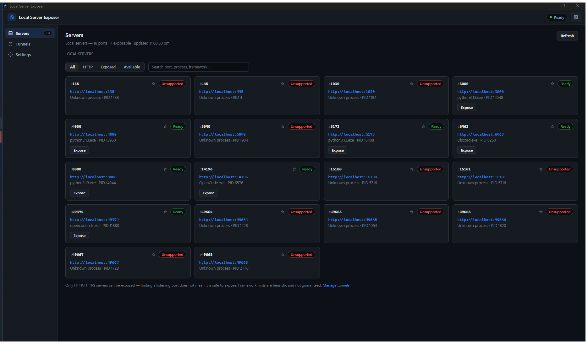
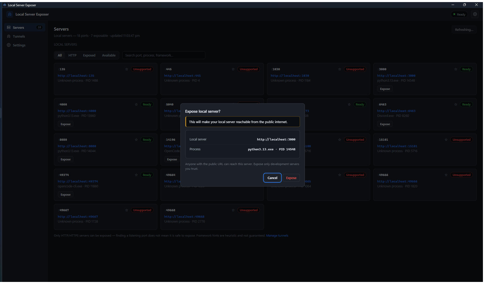
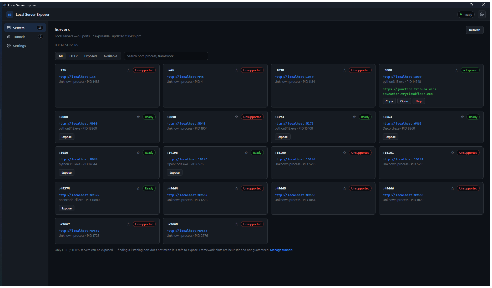

Getting started
A five-minute tour: from "my dev server is running" to "here is a public URL".
The three pages
| Servers | Everything listening on your machine, with an Expose button for the ones that can be shared. |
|---|---|
| Tunnels | The tunnels you currently have running, with their public URLs. |
| Settings | Scan tuning, tunnel-client management, favorites and autostart. |
The badge on Tunnels shows how many are running.
1. Find your server
Start your development server as usual — for example something
listening on http://localhost:3000. The Servers page
refreshes on its own (every 15 seconds by default); you can also press
Refresh.
Each listener appears as a card showing:
- the port and a clickable local address;
- the process that owns it (for example
node.exe · PID 14548); - a status label, and for web servers the response status, page title and a best-effort framework hint.

2. Expose it
- Press Expose on a card marked Ready.
- Read the confirmation: it states plainly that the server becomes reachable from the public internet, and shows the exact URL and process. Cancel is focused; Escape or clicking outside also cancels.
- Press Expose to confirm.

While the tunnel starts, the card shows Starting. The public URL appears only once the tunnel is genuinely serving — the app never shows a URL it has not actually received.
3. Share it
| Copy | Copies the exact public URL to your clipboard. |
|---|---|
| Open | Opens the URL in your default browser. |
| Stop | Stops the tunnel. The public URL stops working immediately. |
The same URL, start time and status appear on the Tunnels page.

4. Stop it
Press Stop on the card or on the Tunnels page. To stop everything at once, use Stop all tunnels in the tray menu. Tunnels are also stopped automatically when the application exits — a tunnel cannot outlive the app, even if the app is killed.
Reading the status labels
| Ready | Answers HTTP or HTTPS. The only state that can be exposed. |
|---|---|
| Unsupported | Listens, but does not speak HTTP/HTTPS. Cannot be exposed — by design. |
| Unknown | The port could not be classified yet. |
| Unreachable | Listed but did not answer when probed. |
| Starting | The tunnel client is registering with Cloudflare. |
| Exposed / Running | Live — the public URL is working. |
| Stopping… | Shutting down. |
| Tunnel failed | It could not start, or it died unexpectedly. The card shows why; press Retry. |
If a tunnel is still Starting after a minute, the app gives up and reports the failure with a reason instead of spinning forever.
Finding things quickly
- Filters — All, HTTP, Exposed, Available.
- Search — matches port number, process name or framework, so
5173,nodeorvitenarrows the list. - Favorites — star a card to pin it to the top; favorites persist across restarts.
- Ghost rows — if a tunneled server disappears, its card stays visible as unavailable so you can still stop the tunnel.
Settings worth knowing
| Scan interval | Seconds between scans (5–300). |
|---|---|
| Enable HTTP / HTTPS detection | Turn off to list listeners without probing them. |
| Scan localhost only | Off lists LAN listeners too, but they are never exposable. |
| Maximum concurrent probes | Parallel probes per scan (1–256). Lower it on a slow machine. |
| cloudflared executable | Leave on Automatic, or point at your own copy. It is re-verified before every tunnel. |
| Minimize to tray | Closing the window keeps the app in the tray. |
| Stop tunnel when its server stops | Off (default) keeps a tunnel alive across a quick server restart. |
"Stop tunnels when application exits" is always on. Tunnels are tied to the app so that a public URL can never keep running without supervision.
Next: troubleshooting · security and privacy